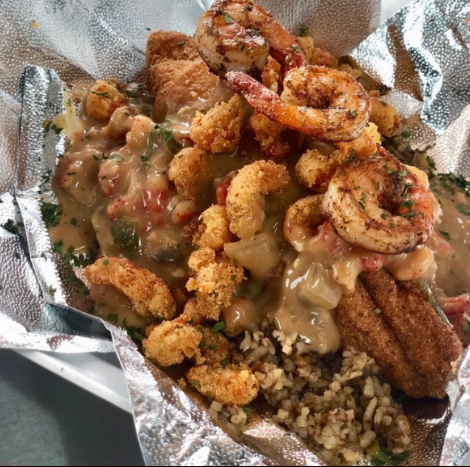

Drive-thru · Pickup · Delivery
Three ways to get your plate
Order delivery or pickup on DoorDash, or pull up to the drive-thru at 10600 Fondren Road.
Signature plates include Mardi Gras Pasta, Catfish Bienville, Catfish Étouffée, Crawfish Étouffée, Shrimp & Grits and gumbo, all cooked on Fondren Road in Southwest Houston.
Order delivery or pickup on DoorDash, or pull up to the drive-thru at 10600 Fondren Road.


Our food isn’t just seasoned. It’s layered with creole spice and bold flavor that keeps working on your tastebuds through the whole plate. There are no handed-down recipes here. Everything is our own, and everything starts with butter melting in a pot or oil in the fryer.
Like your grandmother’s kitchen table. We cook for the person who genuinely savors it: the one who stops mid-bite and asks if that’s garlic they’re tasting. You may have never set foot in southwest Louisiana, but that is where the plate is trying to take you. What we want you to remember is the whole experience, start to finish, and how we made you feel.
11 years cooking professionally · 3 kitchens, Memphis to Houston.
Kitchen notes: New Southwest Houston restaurant guide · Cajun or Creole? · Étouffée, gumbo and jambalaya, explained · Cajun wings in Southwest Houston
Rated 5.0 on Google · 46 five-star reviews
Recent guests praised catered food for groups, called the Creole food a must-try, and rated the food, service and atmosphere 5/5.
Fresh plates and menu updates from @bayoufork.
Bayou Fork Kitchen is at 10600 Fondren Road, Houston, TX 77096, in Southwest Houston. Get directions on Google Maps.
Bayou Fork Kitchen opened in September 2026 at 10600 Fondren Road in Southwest Houston. It is the newest kitchen from the family behind Mardi Gras Memphis. New here? Read our first-timer’s guide.
Cajun, Creole and Southern comfort food, including Mardi Gras Pasta, gumbo, étouffée, shrimp & grits, Catfish Bienville, wings and po-boys. See the full menu.
We are open Monday through Saturday, 6:30am to 7:30pm. We are closed on Sunday.
Mardi Gras Pasta is creamy Cajun pasta with your choice of chicken, shrimp or both. We also serve Crawfish Fettuccine. Read more on the Mardi Gras Pasta page.
Yes. We serve gumbo, crawfish étouffée and catfish étouffée.
Yes. Order delivery or pickup through DoorDash, or use the drive-thru at 10600 Fondren Road. Delivery and service fees are set by DoorDash at checkout. See order online.
Yes. Our breakfast menu includes breakfast tacos, croissant sandwiches, Bayou Breakfast, chicken and waffles and shrimp & grits. We open at 6:30am Monday through Saturday. See the breakfast menu.
Yes. We cater corporate lunches, private parties, family gatherings and other events across Houston, Manvel, Pearland, Missouri City and Sugar Land. Request a catering quote.